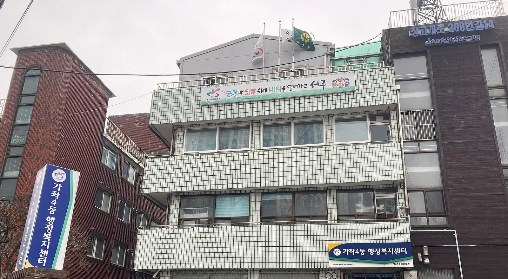
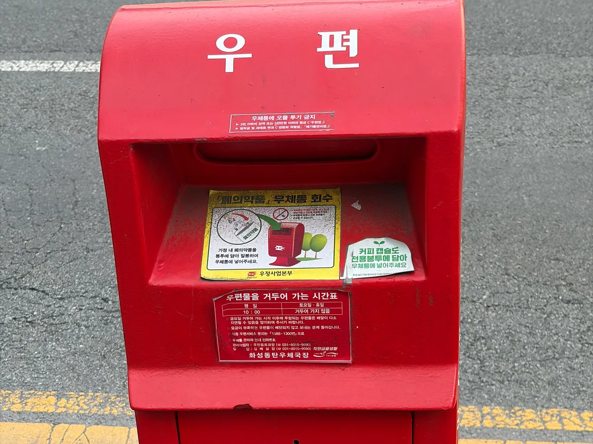
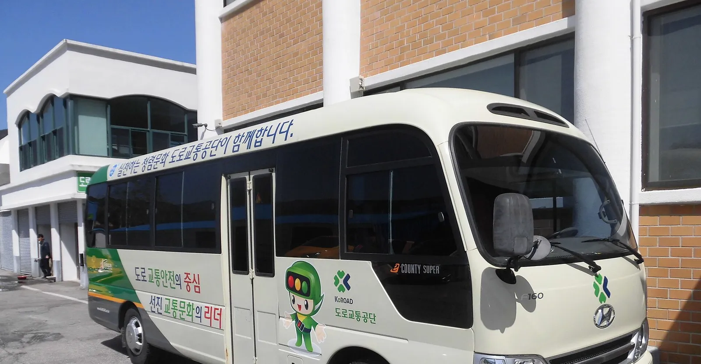
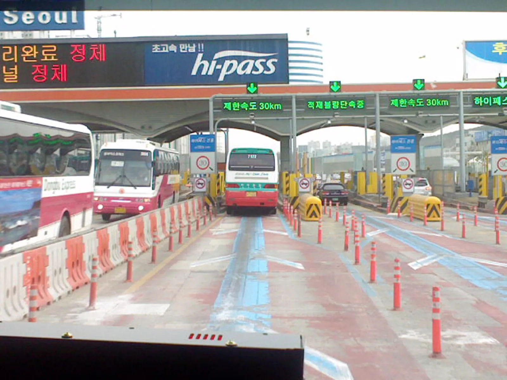
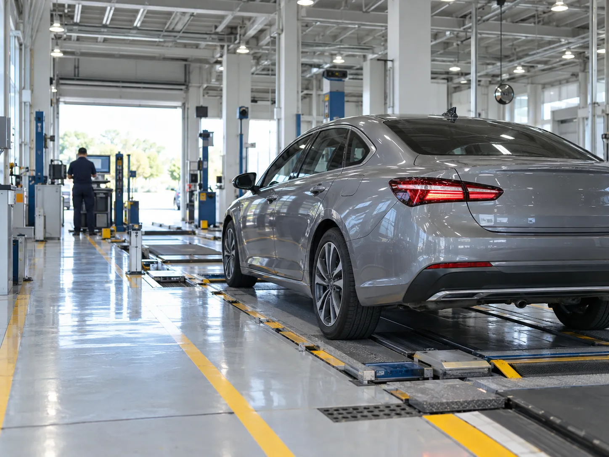
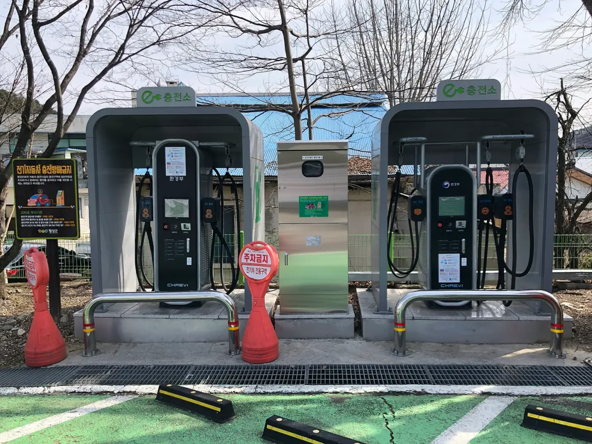

▲ 전입신고를 접수하는 동 행정복지센터. 경기 오산시 남촌동 행정복지센터(파일 정보 기준, 위쪽만 잘라 사용) ⓒ 마지막열정 / Wikimedia Commons (CC BY-SA 4.0)
"이사했으니 자동차 주소도 알아서 바뀌겠지." 절반은 맞고 절반은 틀리다. 개인 명의 차량이라면 전입신고만으로 자동차 등록 주소(사용본거지)가 바뀐 것으로 보는 조문이 있지만, 이 조문이 적용되지 않는 차가 따로 있고, 면허·보험·카드·하이패스·보조금처럼 법이 자동으로 챙겨 주지 않는 곳이 더 많다. 이 글은 국가법령정보센터의 자동차등록령·자동차등록규칙·자동차관리법과 정부24 안내문을 직접 대조해 "이사 후 자동차 관련 변경 체크리스트"를 만들었다. 확인하지 못한 항목은 그대로 "확인하지 못함"이라고 적었다.
명의이전(소유자가 바뀌는 경우)은 자동차 명의이전 기한·비용 기사에서, 등록증을 새로 받는 절차는 자동차등록증 재발급 기사에서 다뤘다. 이 글은 소유자는 그대로이고 사는 곳만 바뀐 경우만 다룬다. 기준일은 2026년 10월 4일이다.
1. 먼저 판정: 내 차는 전입신고로 끝나나, 따로 신고해야 하나
자동차 등록은 "사용본거지"를 기준으로 관리된다. 자동차등록규칙 제3조는 개인 소유자의 사용본거지를 그 소유자의 주민등록지로, 법인은 주사무소 소재지로 정한다. 그래서 개인이 이사해 전입신고를 하면 사용본거지도 따라 움직이는 구조다. 자동차등록령 제22조 제2항은 이 점을 반영해, 소유자의 주민등록지가 사용본거지인 경우 「주민등록법」 제16조 제1항에 따른 전입신고를 하면 변경등록의 신청을 한 것으로 본다고 정한다.
| 내 상황 | 전입신고만으로 충분? | 별도 변경등록 | 근거·비고 |
|---|---|---|---|
| 개인 명의, 사용본거지 = 주민등록지(일반적) | 예 | 불필요 | 령 제22조 제2항 제5호. 소유자 본인이 포함된 전입신고여야 함 |
| 개인 명의지만 사용본거지를 주민등록지와 다르게 인정받은 차량 | 아니오 | 사유 발생일부터 30일 이내 | 규칙 제3조 제2항(사유 증명 서류 제출). 의제 조항은 "주민등록지가 사용본거지인 경우"에만 적용 |
| 법인·단체 명의 차량 | 해당 없음 | 주사무소 이전 시 30일 이내 | 사용본거지가 주사무소 소재지(규칙 제3조 제1항 제2호) |
| 차는 아버지 명의인데 자녀만 전입 | 아니오(소유자가 안 움직임) | 소유자가 이사한 때만 해당 | 의제는 "자동차 소유자가" 전입신고한 경우. 자녀 전입은 소유자 주소와 무관(카프리즘 해석) |
| 전입신고를 아예 못 한 상태로 이사 | 아니오(의제 조건 미충족) | 우선 전입신고 14일, 변경등록은 령 제22조 제1항 기준 | 14일 안에 못 하면 주민등록법상 과태료 대상(5만 원 이하) |
정부24 전입신고 유의사항 9번은 "시·도를 달리하여 전입신고한 경우 타 시·도 차량 소유자는 「자동차관리법」 제11조 및 「자동차등록령」 제22조에 따라 별도의 변경등록 신고를 하여야 한다"고 안내하고, 지역번호판 자동차는 15일 이내 시·군·구에 한다고 적고 있다. 이 문구만 보면 모든 차가 따로 신고해야 하는 것처럼 읽히지만, 령 제22조 제2항과 제25조 제1항 단서가 "주민등록지가 사용본거지면 제외"를 명시하고 있어 일반 승용차에는 해당하지 않는 것으로 정리된다(카프리즘 해석). 정부24 안내문의 "15일"과 령 조문의 "30일"은 다르게 읽힌다. 이번에 확인한 범위에서는 찾기쉬운 생활법령정보의 같은 페이지 안에서도 첫 문단은 "15일 이내 시·도지사에게 변경등록", 세부 설명(자동차관리법 제11조 제1항, 령 제22조 제1항·제25조 제1항)은 "30일 이내"로 서로 다르게 적혀 있다. 국가법령정보센터의 현행 령(2026.6.3 시행본)은 제22조 제1항과 제25조 제1항 모두 30일이고 15일 규정은 찾지 못했다. 15일 문구가 개정 전 기준이 남은 것이라는 추정은 가능하지만 출처는 확인하지 못했고, 정부24 해당 페이지 원문도 이번에 다시 열어 대조하지 못했다. 이 글은 조문 기준 30일로 계산하며, 마감이 빠듯하면 등록관청에 확인하는 쪽을 권한다.

▲ 전입신고를 접수하는 동 행정복지센터. 인천 서구 가좌4동 행정복지센터(파일 정보 기준, 위쪽만 잘라 사용) ⓒ Narubaru7 / Wikimedia Commons (CC BY 4.0)
📍 시·도가 바뀌어도 번호판은 그대로다
시·도 간 이전에서 등록번호가 새로 부여되는 경우를 규정한 자동차등록령 제24조 제1항 제2호는 "자동차운수사업용 자동차(대여사업용 자동차는 제외한다)"를 대상으로 한다. 자가용 승용차는 이 조항에 해당하지 않으므로 이사로 번호판을 교체해야 하는 경우는 조문상 확인되지 않는다. 다만 구형 지역번호판을 단 차량의 현장 처리는 등록관청마다 다를 수 있어 확인하지 못했다.
이사 유형별로 해야 할 일 판정표
같은 "이사"라도 개인이냐 법인이냐, 같은 시·도냐 아니냐에 따라 법이 요구하는 절차가 갈린다. 조문(자동차등록령 제22조·제24조·제25조, 자동차등록규칙 제3조)만 기준으로 정리했다.
| 이사 유형 | 전입신고(14일) | 자동차 변경등록(30일) | 번호판 |
|---|---|---|---|
| 개인 명의, 같은 시·도 안에서 이사(사용본거지=주민등록지) | 필요(소유자 본인 포함) | 불필요. 전입신고로 신청한 것으로 봄(령 제22조 제2항 제5호) | 교체 사유 확인되지 않음 |
| 개인 명의, 시·도를 넘어 이사(사용본거지=주민등록지) | 필요(소유자 본인 포함) | 불필요. 령 제25조 제1항 단서가 주민등록지가 사용본거지면 제외 | 승용 자가용은 교체 사유 확인되지 않음(령 제24조 제1항 제2호는 운수사업용) |
| 개인 명의, 사용본거지를 주민등록지와 다르게 인정받아 그 사용본거지가 바뀐 경우 | 필요(주민등록 이전 시) | 필요. 사유 발생일부터 30일(같은 시·도 령 제22조 제1항, 시·도 변경 령 제25조 제1항) | 번호가 바뀌는 때만 번호판 제출 |
| 법인·단체 명의, 주사무소를 같은 시·도 안에서 이전 | 해당 없음(개인 전입신고 대상 아님) | 필요. 사용본거지가 주사무소 소재지(규칙 제3조 제1항 제2호), 30일 | 교체 사유 확인되지 않음 |
| 법인·단체 명의, 주사무소를 시·도 밖으로 이전 | 해당 없음 | 필요. 변경한 날부터 30일(령 제25조 제1항) | 운수사업용(대여사업용 제외)은 새 번호·번호판 발급(령 제25조 제2항, 제24조 제1항 제2호) |
표에서 보듯 일반 개인 승용차는 이사 거리와 관계없이 전입신고 하나가 핵심이고, 별도 신고 대상은 사용본거지를 달리 인정받은 차와 법인 차량으로 좁혀진다. 정부24 유의사항 9번의 "타 시·도 차량 소유자 별도 신고" 문구가 이 표의 두 번째 행과 어떻게 맞물리는지는 위에서 적은 대로 등록관청 확인이 필요하다(카프리즘 해석).
▲ 동 행정복지센터 로비의 전입 환영 포토존. 인천 미추홀구 주안5동 행정복지센터(파일 정보 기준, 일부만 잘라 사용) ⓒ Narubaru7 / Wikimedia Commons (CC BY-SA 4.0)
2. 기한과 과태료를 숫자로 보면: 전입 14일, 변경등록 30일
기한은 두 겹이다. 먼저 전입신고는 전입한 날부터 14일 이내이며 정당한 사유 없이 넘기면 5만 원 이하 과태료다(「주민등록법」 제16조 제1항, 제40조 제4항). 별도 변경등록이 필요한 차량이라면 사유가 발생한 날부터 30일 이내(자동차등록령 제22조 제1항, 시·도 간 사용본거지 이전은 제25조 제1항 "변경한 날부터 30일")에 등록관청에 신청해야 한다. 아래는 기산 방식을 "이사한 날 다음 날부터 센다"고 가정하고 계산한 마감일이다(초일불산입은 카프리즘 가정이며 등록관청의 실제 계산과 하루 차이가 날 수 있다).
| 이사일(가정) | 전입신고 마감 | 변경등록 마감(해당 차량) | 12월 1일 이전에 끝나나 |
|---|---|---|---|
| 10월 10일 | 10월 24일 | 11월 9일 | 둘 다 예 |
| 10월 25일 | 11월 8일 | 11월 24일 | 둘 다 예(마감 직전까지 미루면 빠듯) |
| 11월 20일 | 12월 4일 | 12월 20일 | 마감 전에 해도 12월 1일을 넘길 수 있음 |
변경등록을 아예 미루면 과태료가 붙는다. 자동차관리법 제84조 제5항 제2호는 변경등록 신청을 하지 않은 자에게 50만 원 이하의 과태료를 정하고, 시행령 별표 2는 지연기간 90일 이내 2만 원, 90일 초과 174일 이내는 "2만 원에 91일째부터 계산하여 3일 초과 시마다 1만 원을 더한 금액", 175일 이상은 30만 원으로 정한다. 아래 표는 이 문구를 "지연일수에서 90을 뺀 값을 3으로 나눈 몫만큼 1만 원 가산"으로 풀어 계산한 값이다. 이 해석은 카프리즘 추정이며 실제 부과는 등록관청이 결정한다.
| 신청 지연일수 | 계산식 | 과태료(추정) |
|---|---|---|
| 90일 이하 | 정액 | 2만 원 |
| 100일 | 2만 + (10일 ÷ 3 = 3회) × 1만 | 5만 원 |
| 120일 | 2만 + (30 ÷ 3 = 10회) × 1만 | 12만 원 |
| 150일 | 2만 + (60 ÷ 3 = 20회) × 1만 | 22만 원 |
| 174일 | 2만 + (84 ÷ 3 = 28회) × 1만 | 30만 원 |
| 175일 이상 | 정액(별표 2) | 30만 원 |
⚠️ 이 표를 읽을 때 주의할 점
별표 2의 일반기준은 위반 상태가 6개월 이상이면 금액의 2분의 1 범위에서 늘릴 수 있고, 사소한 부주의나 시정 노력이 인정되면 2분의 1 범위에서 줄일 수 있다고 정한다. 다만 법정 상한(50만 원) 안에서다. 이사 직후 자진 신고하는 경우 감경이 실제로 어떻게 적용되는지는 확인하지 못했다.
✅ 별도 변경등록이 필요한 경우 준비물
· 자동차변경등록신청서(별지 제11호서식)
· 변경 사유를 증명하는 서류(규칙 제29조 제1항 제2호)
· 등록번호판은 등록번호가 바뀌는 경우에만 제출
· 대리인이 신청하면 위임장과 위임자 신분증 사본
· 사용본거지확인정보·등록원부는 행정정보 공동이용으로 확인(동의 시 서류 생략)
· 접수 후 등록관청이 자동차등록증 해당 난에 변경사항을 적고 날인해 발급(규칙 제32조)
온라인 접수 가능 여부와 수수료는 이번 조사에서 직접 확인하지 못했다. 신청은 시·군·구 차량등록 담당 부서 기준으로 안내하며, 자동차등록증 분실이 겹쳤다면 재발급 절차를 같이 확인하자.
놓쳤을 때 비용 시나리오: 전입신고 지연과 변경등록 지연을 합치면
전입신고 과태료는 「주민등록법 시행령」 별표 4(1차 위반)에서 지연 7일 이내 5천 원, 1개월 이내 2만 원, 3개월 이내 3만 원, 6개월 이내 4만 원, 6개월 초과 5만 원으로 정해져 있다. 자동차 쪽 과태료는 앞의 환산표를 그대로 쓴다. 아래는 이사일 D 기준으로 전입신고를 기한(D+14)보다 늦게 한 경우를 계산한 것이다. 개인 차량은 전입신고 시점에 변경등록을 신청한 것으로 보므로, 전입신고가 D+30을 넘기면 변경등록도 늦은 것으로 볼 수 있다는 것이 계산의 가정이다(카프리즘 해석이며 실제 부과 여부는 확인하지 못했다).
| 시나리오 | 계산 | 합계(추정) |
|---|---|---|
| 개인 차량, 전입신고 5일 지연 | 전입 5천 원 + 변경등록 지연 없음(신고일 D+19 < D+30) | 5천 원 |
| 개인 차량, 전입신고 20일 지연 | 전입 2만 + 변경등록 4일 지연(D+34−D+30) 2만 | 약 4만 원 |
| 개인 차량, 전입신고 60일 지연 | 전입 3만 + 변경등록 44일 지연 2만 | 약 5만 원 |
| 개인 차량, 전입신고 120일 지연 | 전입 4만 + 변경등록 104일 지연(2만 + 14÷3=4회 × 1만 = 6만) | 약 10만 원 |
| 법인·별도 신고 대상, 변경등록 100일 지연 | 2만 + (10÷3=3회) × 1만 | 5만 원 |
| 같은 대상, 200일 지연(6개월 이상) | 30만 원, 별표 2 일반기준에 따라 2분의 1 범위(15만 원)에서 가중 가능, 상한 50만 원 안 | 30만~45만 원 |
| 위 + 우편 못 받아 정기검사 60일 지연 | 변경등록 30만~45만 + 검사 4만 + (30÷3=10회) × 2만 = 24만 | 54만~69만 원 |
결론은 두 가지다. 일반 개인 차량은 신고가 몇 달 늦어도 과태료 총액이 10만 원 안팎이지만, 법인·별도 신고 대상 차량은 6개월을 넘기면 한 건만으로 30만~45만 원이 된다. 그리고 가장 비싼 것은 주소 미변경으로 놓친 정기검사 지연 과태료다. 위 합계는 단순 합산한 추정치이며, 자진 신고 때의 감경 적용 여부와 의제 조항 적용 방식은 확인하지 못했다.
3. 통지서·고지서·리콜 우편이 어디로 가나: 주소가 틀려도 의무는 남는다
주소 변경을 소홀히 했을 때 실제로 터지는 문제는 과태료 자체보다 우편 수신 실패로 인한 연쇄 지연이다. 법령에서 확인한 사실만 정리하면 다음과 같다.
| 통지 종류 | 조문에서 확인한 내용 | 주소 미변경 시 영향 |
|---|---|---|
| 정기검사 기간 경과 통지 | 자동차관리법 시행규칙 제77조의2: 정기검사 기간이 지난 날부터 10일 이내와 20일 이내에 각각 우편 또는 문자메시지로 통지 | 통지를 못 받아도 검사 의무가 없어지는 조항은 확인하지 못함. 과태료는 지연기간 기준 |
| 리콜(제작결함 시정) 통지 | 시행규칙 제41조: 결함을 안 날부터 30일 이내 문자메시지(번호를 모르는 경우 제외) 및 우편으로 통지하고 일간신문에 공고 | 우편 발송 주소가 등록원부 기준인지는 확인하지 못함. 휴대전화 번호 변경도 영향 |
| 운전면허 수시 적성검사·정지·취소 통지 | 도로교통법 시행규칙 제84조·제93조: 주소를 확인할 수 없거나 송달 불가 시 운전면허대장에 기재된 주소지 관할 시험장·경찰관서 게시판에 14일간 공고하면 통지를 대신할 수 있음 | 이사한 주소로 안 와도 공고로 통지된 것으로 처리될 수 있음 |
| 전입지 우편 전송 | 정부24 전입신고 시 동의하면 우정사업본부가 전입신고일부터 3개월까지 전입지로 우편물 전송 | 3개월 지나면 발송처에 직접 주소 변경 필요 |
▲ 오래 방치된 우편물 더미(설명용 AI 생성 예시 이미지). 이사 후 주소가 안 바뀌면 검사·리콜 통지가 이렇게 쌓일 수 있다 ⓒ CarPrism (AI 생성 이미지)

▲ 거리의 우체통(파일 정보 기준, 위쪽 일부만 잘라 사용). 정부24 우편 전송은 전입신고일부터 3개월까지만 이어지므로 발송처별 주소 변경이 따로 필요하다 ⓒ revi / Wikimedia Commons (CC BY-SA 2.0 KR)
정기검사 쪽은 정기검사와 종합검사 비교 기사와 정기검사 과태료 기사에서 자세히 다뤘다. 리콜은 우편에만 의존하지 말고 차대번호로 직접 조회하는 방법을 알아 두는 것이 안전하다.
📍 운전면허 주소: 법정 의무 조항은 찾지 못했다
이번에도 국가법령정보센터에서 도로교통법·시행령·시행규칙 본문을 다시 훑었지만 운전면허 주소 변경 신고 의무 조항과 미신고 과태료는 찾지 못했다. 다만 도로교통법 시행규칙의 서식 안내문에는 "면허증에 기재된 주소지와 현재의 거주지가 다른 경우 면허관계통지서가 도달되지 못하여 불이익한 행정처분을 받을 우려가 있으니, 주소지 변경 등 면허증 기재사항의 변경은 지체 없이 경찰서 또는 전입한 주소지를 관할하는 읍·면·동사무소에 신고하여 확인받으라"는 취지의 문구가 있다. 이 문구는 서식에 붙은 안내일 뿐 법정 의무 조항이나 과태료 근거가 아니다. 정부24 전입신고 때 면허 주소가 자동 반영되는지는 1차 자료로 확인하지 못했으므로, 이사 후에는 경찰서·운전면허시험장 또는 안전운전 통합민원(경찰청)에서 면허 주소를 직접 확인하는 것을 권한다. 갱신 절차와 준비물은 운전면허 갱신 기사에 정리해 두었다.

▲ 도로교통공단 로고가 붙은 소형 버스(파일 정보 기준, 앞쪽 하단은 잘라냄). 면허 기재사항 확인은 경찰서·읍·면·동사무소로 안내하는 서식 문구가 있다 ⓒ hyolee2 / Wikimedia Commons (CC BY-SA 4.0)
4. 자동차세와 주차: 지자체가 바뀌면 달라지는 것
자동차세는 지방세법 제125조에 따라 지방자치단체 관할구역에 등록되어 있는 자동차를 소유한 자에게 부과된다. 제128조는 제1기분(1~6월)을 6월 16~30일, 제2기분(7~12월)을 12월 16~31일에 내도록 하고, 납기가 있는 달의 1일 현재 자동차 소유자에게 자동차 소재지를 관할하는 지방자치단체가 징수한다고 정한다. 연세액을 한꺼번에 내는 연납은 1·3·6·9월 신고납부 기간이 따로 있다. 연납 할인율과 신청 요령은 자동차세 연납 기사에서 다뤘다.
| 이사·등록지 변경 시점 | 다음 납기 | 확인할 것 |
|---|---|---|
| 11월 30일 이전에 등록지 반영 | 12월 16~31일(제2기분) | 새 지자체 고지서가 오는지(소재지 기준 추정) |
| 12월 1일 이후 반영 | 12월 16~31일 | 12월 1일 현재 등록지가 이전 지자체이면 이전 지자체가 부과할 수 있음(추정) |
| 올해 연납을 이미 낸 경우 | 없음 | 이사 후 정산·이중납부 여부는 확인하지 못함 |
표준세율은 법에 정해져 있어 이사만으로 금액이 달라지는 것은 일반적으로 없다고 보지만, 조례로 세율을 조정하는 지자체가 있는지는 확인하지 못했다. 지자체 변경이 실제로 달라지는 곳은 세금보다 지자체가 운영하는 혜택이다.
▲ 지자체가 운영하는 건물형 공영주차장. 경기 군포시 반월호수 공영주차장(파일 정보 기준, 아래쪽 차량 부분을 잘라 사용) ⓒ LandAndTree / Wikimedia Commons (CC0)
✅ 지자체 단위로 다시 확인할 것 (지자체별 조례·운영 기준)
· 거주자우선주차: 서울시 홍보 자료는 신청 시 주민등록과 실거주, 해당 지역 차량 등록을 확인한다고 안내한다. 이사 시 구획 반납·재신청 규정은 이번 조사에서 확인하지 못함
· 공영주차장 감면(경차·전기차·다자녀 등): 감면 대상과 등록 방식이 지자체마다 달라 새 지자체 주차 담당 부서에 확인(감면 가이드 기사 참고)
· 차량 등록 주소가 반영되기 전에 감면 신청을 하면 거절될 수 있으니 전입신고 후 변경 반영 여부를 먼저 확인
5. 하이패스·보험·할부사·카드: 법이 챙겨 주지 않는 변경 체크리스트
여기부터는 대부분 법적 신고 의무가 아니라 계약·약관의 영역이다. 조문으로 확인할 수 있는 것은 거의 없어, 각 사업자의 약관과 고객센터 안내로 확인해야 한다. 공통 원칙은 "전입신고가 자동으로 전달하지 않는 곳은 내가 직접 바꾼다"이다.
| 항목 | 바꿔야 하는 이유 | 법적 의무·자동 연동 확인 결과 |
|---|---|---|
| 하이패스(단말기·카드) | 청구서·미납 안내 수신, 카드 주소 불일치 | 주소 변경 의무 조항 확인하지 못함. 카드사 주소 변경 필요(약관별) |
| 자동차보험 | 갱신 안내·증권 수신, 긴급 연락 | 약관상 주소 변경 통지 의무와 보험료 영향 확인하지 못함 |
| 할부·리스·캐피탈 | 청구서 수신, 저당권 설정 차량의 담보 관리 | 등록관청이 변경등록을 하면 등록상 이해관계인에게 알리도록 한 조문이 있으나(령 제25조 제4항) 의제 경우 적용 여부는 확인하지 못함 |
| 신용카드·주유 제휴카드 | 명세서·갱신 카드 우편 수신 | 카드사별 약관 확인 필요. 정부24 우편 전송은 전입 후 3개월 한정 |
| 휴대전화 번호·연락처 | 리콜 문자 통지는 번호 기준 | 시행규칙 제41조: 번호를 모르는 경우 문자 통지 제외 |

▲ 하이패스 차로. 경부고속도로 서울톨게이트(파일 정보 기준, 원본 일부만 잘라 사용). 단말기·카드 주소·연락처는 이사 후 따로 확인해야 한다 ⓒ P.Cps1120a / Wikimedia Commons (CC BY-SA 3.0)
하이패스는 주소보다 카드와 단말기 명의가 더 큰 변수다. 차를 사고팔았다면 하이패스 단말기 명의 이전 기사를, 할부로 산 차의 저당권이 걸려 있다면 압류·저당 확인 기사를 같이 보자. 보험은 갱신 시점의 비교가 중요해 보험 갱신 할인 기사와 함께 보면 좋다.
▲ 이사 직후 정리 장면(설명용 AI 생성 예시 이미지). 서류와 연락처를 한 번에 점검하는 것이 가장 빠르다 ⓒ CarPrism (AI 생성 이미지)
6. 정기검사소는 바뀌나: 지역이 정하는 건 장소가 아니라 검사 종류
정기검사 장소는 지역에 묶여 있지 않다는 안내를 자치구 페이지 등 여러 2차 안내에서 확인했다(전국 지정검사소·교통안전공단 직영검사소 어디서나 가능). 다만 자동차검사 규칙에서 장소 제한 여부를 직접 확인하지는 못했으므로 예약 전 해당 검사소 안내를 보자. 이사에서 더 중요한 것은 등록 지역에 따라 검사 종류가 달라질 수 있다는 점이다. 대기관리권역·인구 50만 이상 도시 등에 등록된 차량은 종합검사 대상이 될 수 있어, 비수도권에서 수도권으로 이사하면 정기검사에서 종합검사로 바뀔 수 있다. 자세한 대상은 정기검사·종합검사 비교 기사에서 확인할 수 있다.

▲ 자동차 검사장 내부(설명용 AI 생성 예시 이미지). 이사한 지역에 따라 받는 검사 종류가 달라질 수 있다 ⓒ CarPrism (AI 생성 이미지)
| 검사 지연일수 | 계산식 | 과태료(추정) |
|---|---|---|
| 30일 이내 | 정액 | 4만 원 |
| 45일 | 4만 + (15일 ÷ 3 = 5회) × 2만 | 14만 원 |
| 60일 | 4만 + (30 ÷ 3 = 10회) × 2만 | 24만 원 |
| 90일 | 4만 + (60 ÷ 3 = 20회) × 2만 | 44만 원 |
| 115일 이상 | 정액 | 60만 원 |
이사 때문에 우편이 안 와서 검사를 놓치는 경우가 가장 흔한 연결 고리라, 이삿날 전에 검사 유효기간 만료일을 먼저 확인해 두면 위 표의 비용을 피할 수 있다.
7. 전기차 보조금: 이사해도 되는 경우와 안 되는 경우
전기차 보조금을 받은 차라면 이사 전에 한 가지를 더 확인해야 한다. 환수 기준은 국비와 지방비가 따로 움직인다. 국비는 기후에너지환경부의 「2026년 전기자동차 보급사업 보조금 업무처리지침」을, 지방비는 각 지자체 기준을 따른다. 지난번에는 지침 PDF의 글자를 추출하지 못해 서울시 FAQ에만 기대었으나, 이번에는 무공해차 통합누리집(ev.or.kr)에 게시된 2026.1판 지침 PDF에서 글자를 추출해 원문을 직접 읽었다.
| 상황 | 확인한 내용 | 출처·비고 |
|---|---|---|
| 의무운행기간 | 최초등록일 기준. 신청 동의서는 "그 밖의 경우 2년 이내 폐차 시, 8년 이내 수출 목적 말소 시" 환수율에 따라 반납 | 지침 부록 동의서. 승용 기준 |
| 등록 말소 | 말소 신청이 접수되면 최초등록일 기준 의무운행기간 경과 여부를 확인하고, 미경과 시 대기환경보전법 시행규칙 별표 21의2 환수기준에 따라 환수. 지자체 집행분은 국비+지방비, 한국환경공단 집행분은 국비 | 지침 6-3. 환수 규칙은 같은 시행규칙 제79조의4 제2항이 별표 21의2로 위임 |
| 판매(소유권 이전) | 의무운행기간 내 매도하면 매수자가 잔여 의무운행기간 준수 의무를 승계한 것으로 간주. 판매 자체를 국비 환수 사유로 적은 조항은 찾지 못함 | 지침 6-3. 지방비는 지자체 기준(서울시는 타 지자체 판매·명의이전 때 서울시 지방비 환수) |
| 이사(전출·주소 이전) | 지침 본문에서 전출·주소 이전을 환수 사유로 정한 조항을 찾지 못함. "위장전입" 등 부정수급은 보조금 전액 환수 사유로 별도 규정 | 지침 PDF 전체에서 전입·이주·이전 키워드 검색. 서울시 FAQ Q15는 명의 변경 없는 개인 주소 이전은 환수 대상 아님, 해외 이주는 환수 |
| 보조금 신청 후·출고 전 타 지자체 이전 | 서울시 보조금 구매 지원 신청 취소(자격 요건 미달) | 서울시 FAQ Q8. 이미 보조금을 받은 뒤와 다른 상황 |
| 2025년 보도와의 차이 | 2025년 3월 보도는 "2년 내 타 지자체 전입 시 환수"라고 전해 서울시 FAQ와 상충 | 지자체 공고·약정에 주소 유지 조건이 있는지는 구매 지자체에서 확인 |
| 전기화물차 | 2만 km 미만 운행하고 최초등록 2년 이내 판매하면 지급 보조금의 30% 환수(승용은 해당 없음) | 지침 6-3 |
이번에 읽은 PDF는 ev.or.kr에 게시된 2026.1판(파일 정보상 작성일 2026.1.5)이며, 이후 기후에너지환경부 사이트에 "개정안 공고" 제목의 게시물이 검색되나 내용은 열어 보지 못해 최신 개정본 반영 여부는 확인하지 못했다. 아래 환수율 표는 서울시 FAQ에 실린 "그 밖의 경우" 운행기간별 환수율로, 지침 6-3의 "그 밖의 사유로 등록을 말소하는 경우" 표와 같은 수치(70·65·60·55·50·40·30·20·0%)임을 원문에서 대조했다.
| 운행기간 | 환수율 | ① 타 지자체 판매·명의이전: 지방비 300만 원에만 적용 | ② 등록 말소: 국비+지방비 800만 원에 적용 |
|---|---|---|---|
| 3개월 미만 | 70% | 210만 원 | 560만 원 |
| 3~6개월 | 65% | 195만 원 | 520만 원 |
| 6~9개월 | 60% | 180만 원 | 480만 원 |
| 9~12개월 | 55% | 165만 원 | 440만 원 |
| 12~15개월 | 50% | 150만 원 | 400만 원 |
| 15~18개월 | 40% | 120만 원 | 320만 원 |
| 18~21개월 | 30% | 90만 원 | 240만 원 |
| 21~24개월 | 20% | 60만 원 | 160만 원 |
| 24개월 이상 | 0% | 0원 | 0원 |
계산식은 환수액 = 해당 보조금 × 환수율이다. 국비 500만·지방비 300만이라는 분담은 설명을 위한 가정일 뿐 실제 분담은 차종·지자체·추가 보조금에 따라 다르며 확인하지 못했다. ①은 서울시 FAQ Q6의 "최초등록일부터 2년 내 타 지자체로 판매 및 명의 이전 시 서울시 지방비 환수"를, ②는 같은 FAQ의 "차량 등록 말소 또는 수출 시 국비 + 서울시 지방비 환수"를 반영했다. 수출 목적의 말소는 6개월 단위 별도 표(70~20%, 96개월 미만까지)를 쓰므로 이 표에 해당하지 않는다. 어느 쪽이든 이사 전에 구매 지자체에 먼저 묻는 것이 가장 싸다.

▲ 행정복지센터 부설 전기차 충전기. 강원 횡성군 공근면 행정복지센터(2020년 3월 13일 촬영 원본 파일 '공근면행정복지센터 전기자동차 충전기' 확인, 파일 정보 기준). 보조금 지급 지자체 조건은 이사 전에 확인해야 한다 ⓒ Choikwangmo9 / Wikimedia Commons (CC0)
✅ 보조금 받은 전기차 이사 전 체크
· 구매 지자체 환경과에 "주소 이전만 할 때 환수 대상인가"를 서면·전화로 확인
· 의무운행기간(2년) 남은 개월 수와 환수율 구간 확인
· 이사와 함께 명의 변경(공동명의 포함)을 하지 말 것. 이 경우는 환수 사례가 명확하다
· 지자체별 보조금 격차와 조건은 지자체별 전기차 보조금 비교 기사 참고
8. 이삿날 기준 타임라인: 순서대로 하면 빠지는 게 없다
지금까지 확인한 것을 시간 순서로 묶었다. 이삿날을 D로 두고, 법정 기한이 있는 항목과 확인만 하면 되는 항목을 구분했다.
▲ 이사 당일 모습(설명용 AI 생성 예시 이미지). 짐을 옮기는 날 서류 점검까지 같이 끝내는 것이 가장 효율적이다 ⓒ CarPrism (AI 생성 이미지)
| 시점 | 할 일 | 성격 |
|---|---|---|
| 이사 전 | 검사 만료일·보조금 의무기간·자동차세 납기 확인, 우편 전송 서비스 동의 준비 | 확인(권장) |
| D~D+14일 | 정부24 또는 주민센터 전입신고(소유자 본인 포함), 우편 전송 동의 | 법정(주민등록법, 5만 원 이하 과태료) |
| 전입 직후 | 자동차 등록 주소 반영 여부 확인, 면허 주소 확인, 하이패스·보험·카드·할부사 주소 변경 | 확인·약관 |
| D+30일(해당 차량) | 사용본거지가 주민등록지와 다른 차량·법인 차량 변경등록 | 법정(령 제22조, 과태료 별표 2) |
| 11월 30일까지 | 12월 자동차세 고지 지자체 점검 | 확인(추정) |
| 이사 후 3개월 안 | 발송처별 주소 변경 완료(우편 전송 종료 시점) | 권장 |
이사 후 30일 일자별 체크리스트(이사일 10월 25일 가정)
이삿날을 10월 25일(일)로 두고 날짜를 대입했다. 기간 계산은 민법 제157조(초일 불산입)에 따라 이사 다음 날부터 센다고 가정했고, 말일이 토요일·공휴일이면 그다음 날로 만료한다는 민법 제161조를 적용했다. 이 두 조문이 주민등록법·자동차등록령의 기한 계산에도 그대로 쓰이는지는 확인하지 못했으므로, 아래 날짜는 카프리즘 계산이며 마감 전에 끝내는 것이 안전하다.
| 시점 | 날짜 | 할 일 | 성격 |
|---|---|---|---|
| D-7 | 10/18(일) | 정기검사 만료일, 전기차 보조금 의무운행 잔여 개월 수, 우편 전송 동의 준비 확인 | 확인(권장) |
| D | 10/25(일) | 이사 당일. 주민센터 창구는 휴무일이라 첫 평일 이후 또는 정부24로 처리 | 권장 |
| D+1 | 10/26(월) | 전입신고(소유자 본인 포함), 우편 전송 동의. 자동차 등록 주소 반영 여부 확인 | 법정 마감 전 조기 처리 |
| D+7 | 11/1(일) → 11/2(월) | 면허 주소 확인, 보험·카드·하이패스·할부사 주소 변경 완료 | 확인·약관 |
| D+14 | 11/8(일) → 11/9(월) | 전입신고 법정 마감(넘기면 지연기간별 5천 원~5만 원 과태료) | 법정(주민등록법) |
| D+30 | 11/24(화) | 별도 변경등록 대상(법인·사용본거지 별도 인정) 차량 마감 | 법정(령 제22조·제25조) |
| 11/30 | 11/30(월) | 12월 1일 자동차세 과세 기준일 전 등록지 반영 확인 | 확인(추정) |
| 12/16~12/31 | 12/16~12/31 | 제2기분 자동차세 납부(연납을 이미 했다면 해당 없음) | 법정(지방세법 제128조) |
| 이사 3개월 뒤 | 2027/1/25 | 정부24 우편 전송 종료 시점. 발송처별 주소 변경 마무리 | 권장 |
이삿날이 달라지면 마감도 달라진다. 앞의 이사일 가정 세 가지에 주말 보정을 반영하면 다음과 같다.
| 이사일 | 전입신고 마감(D+14) | 변경등록 마감(D+30, 해당 차량) |
|---|---|---|
| 10/10(토) | 10/24(토) → 10/26(월) | 11/9(월) |
| 10/25(일) | 11/8(일) → 11/9(월) | 11/24(화) |
| 11/20(금) | 12/4(금) | 12/20(일) → 12/21(월), 12월 1일 이후라 자동차세 기준일을 넘김 |
✅ 마지막 점검 순서
1. 전입신고(소유자 본인 포함)부터 한다. 이것이 자동차 주소와 건강보험 등을 같이 움직이는 출발점이다
2. 등록원부상 주소·사용본거지가 실제로 바뀌었는지 자동차 등록증 또는 민원 조회로 확인한다
3. 면허·보험·카드·하이패스·할부사는 직접 하나씩 바꾼다
4. 검사 만료일과 자동차세 납기를 달력에 넣는다
5. 전기차 보조금 대상이면 지자체에 먼저 확인한다
9. 요약
개인 명의 차량이고 사용본거지가 주민등록지라면 전입신고만으로 변경등록을 한 것으로 본다(자동차등록령 제22조 제2항 제5호). 소유자가 전입하지 않았거나 사용본거지를 달리 인정받은 차량, 법인 차량은 30일 안에 별도 변경등록이 필요하다. 지연 과태료는 90일 이내 2만 원에서 175일 이상 30만 원까지(법정 상한 50만 원 이하), 전입신고는 14일 이내이며 5만 원 이하 과태료다(실제 금액은 지연 기간별 5천 원~5만 원, 주민등록법 시행령 별표 4). 개인 차량은 신고가 몇 달 늦어도 합산 10만 원 안팎이지만, 법인·별도 신고 대상은 6개월을 넘기면 30만~45만 원까지 불어난다(카프리즘 계산).
통지서·리콜·검사 우편은 주소가 틀리면 놓치기 쉽고, 정기검사 지연은 4만~60만 원 과태료로 이어진다. 자동차세는 12월 1일 현재 등록지 기준으로 12월 16~31일 납부하므로 이사 시점을 미리 점검해야 한다. 하이패스·보험·카드·할부사는 법적 의무가 아니라 약관 영역이어서 직접 하나씩 바꿔야 한다.
전기차 보조금 차량은 국비와 지방비 기준이 따로다. 환경부 지침 2026.1판은 등록 말소 때 환수하고 판매 때는 매수자가 의무운행기간을 승계한다고 적었으며 이사(전출) 조항은 찾지 못했다. 서울시 FAQ는 명의 변경 없는 개인 주소 이전은 환수 대상이 아니라고 하지만 2025년 보도와 상충하고 지자체별로 다를 수 있다. 정부24·생활법령의 "15일"과 령의 "30일" 불일치, 운전면허 주소 자동 연동, 자동차세 이사 후 정산, 거주자우선주차 반납 규정, 보험·하이패스 약관, 지침 최신 개정본 반영 여부는 확인하지 못했다. 면허 주소 변경 신고 의무는 법조문에서 찾지 못했고 서식 안내문 문구만 확인했다.